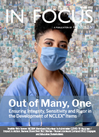
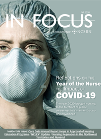

Magazines
In Focus
In Focus is NCSBN's e-magazine. It offers a behind-the-scenes look at NCSBN products and services, giving readers a peek at the inner workings of the organization. Through interviews, guest authors and in-depth storytelling, In Focus highlights the vital work of nursing regulation done by boards of nursing and the organization that serves them. Subscribe to In Focus.
-

In Focus Winter 2021
- Out of Many, One: Ensuring Integrity, Sensitivity and Rigor in the Development of NCLEX Items
- NCSBN Members Volunteer to Administer COVID-19 Vaccines
- Now is the Time: Compact Licensure Can’t Wait Until the Next Crisis
- Nurse Licensure Compact (NLC) Engages and Educates Stakeholders
2021 | Publication
-

In Focus Fall 2020
- Reflections on the Year of the Nurse: The Impact of COVID-19
- Global Perspective: Registered Nurses Association of the Northwest Territories & Nunavut
- NCSBN’s Core Data Annual Report Template: Helping Nursing Regulatory Bodies Approve Nurse Education Programs
- Nurse Licensure Compact Update
- An Update from the NCSBN Examinations Department
2020 | Publication
-

In Focus Summer 2020
- The NCLEX & COVID-19: NCSBN and Pearson VUE Address the Challenges of Delivering a Valid and Secure Exam in a Safe Testing Environment
- When COVID-10 Shut Everything Down, Nursing Regulatory Bodies Carried On
- Lessons Learned from the Pandemic: Issues that can be Avoided if All States Were in the Nurse Licensure Compact
- The Nurse Licensure Compact & COVID-19, a Tale of Two States
- Practice/Academic Partnership: One Answer to Prelicensure Clinical Placements During a Pandemic
- An Update from the NCSBN Examinations Department
2020 | Publication
-

In Focus Spring 2020
- Going Global: NCSBN’s Global Profile of Nursing Regulation, Education and Practice
- Rising to the Challenge: NCSBN and its Members Provide Services During COVID-19 Pandemic
- A Global Perspective: A Message of Support and Encouragement from Spain
- Care and Connection: Rhigel “Jay” Tan Makes Masks and Face Shields for Las Vegas Area Health Care Workers
- The Journal of Nursing Regulation Celebrates 10 Years
- Pursuing the Mission of the Nurse Licensure Compact through Rulemaking
- Impact in Action: Nurses Share their Nurse Licensure Compact Stories
2020 | Publication
-

In Focus Winter 2020
- Impact in Action: Nurses Share their NLC Stories
- Lights, Camera and ACTION! NCSBN Partners with CBS Community Partnership Program to Educate the Public About the Next Generation NCLEX Project
- A New Assessment Model for Internationally Qualified Nurses and Midwives in Australia
- 2020 Year of the Nurse and Midwife: Celebrating Success, Identifying Challenges and Proposing Solutions
- Texas Alternative Disciplinary Option for Practice Remediation Shows Success
2020 | Publication
-

In Focus Fall 2019
- 2020 Global Year of the Nurse
- Honoring a Tireless, Forward-thinking Reformer
- Wyoming Board President Assists During In-flight Medical Emergency
- One NCSBN: a Workplace Cultural Transformation
- The NLC Leads the Way in an Extraordinary Time of Growth and Change
- 2019 Annual Meeting Recap: Forumulating Strategy & Aligning Influence
2019 | Publication
-

In Focus Summer 2019
- Rising to the Challenge: the Optimal Regulatory Board System (ORBS)
- NCSBN Members Share Their Stories of Involvement
- Nursing and Midwifery Council of New South Wales, Australia
- 2018 PN Practice Analysis Now Available
- Nurse Licensure Compact Update
- Nurses from Across the Globe Gather in Singapore
- A Nursys e-Notify Success Story in Missouri
- The Alabama Board of Nursing Receives NCSBN’s 2019 Regulatory Achievement Award
- Angels of Sorokdo: Korean Nurses Association Seeks to Honor Nurses Who Selflessly Served
2019 | Publication
-

In Focus Spring 2019
- National Center for Independent Examination (NCIE), Kazakhstan
- Leaders Engage in Facilitated Dialogue at NLC Commissioner Summit
- Next Generation NCLEX NGN Talks Video Series
- NCSBN Prepares to Launch International Center for Regulatory Scholarship (ICRS)
- An Attitude of Gratitude Makes Kathy Thomas a Mentor to Many
- NCSBN Builds In-house Focal Point Studio
2019 | Publication
-

In Focus Winter 2019
- Groundbreaking, Comprehensive, Vital: The NCSBN National Nursing Guidelines for Medical Marijuana
- NCLEX Practice Exam Simulates the Experience of Taking the NCLEX
- Global Perspective: College of Registered Nurses of Manitoba
- Helping to Drive the Change: Alabama Board of Nursing Highlights Voluntary Disciplinary Alternative Program with Awareness Campaign
- NCSBN Launches a New Awards Nomination Portal for the 2019 Awards Program
- 2019 NCLEX-RN Test Plan
2019 | Publication
-

In Focus Fall 2018
- NCSBN Celebrates its Ruby Red 40th Anniversary at the 2018 Annual Meeting
- A United Mission: Reflections on Hosting an International Guest and Colleague at NCSBN’s Annual Meeting
- Global Perspective: Nursing Council of New Zealand | Te Kaunihera Tapuhi o Aotearoa
- Being a Good Listener: Karen Scipio-Skinner Reflects on Leadership and Service
- Pearson Vue Testing Center Updates
2018 | Publication
-

In Focus Summer 2018
- Impacting Change: NCSBN Office of Government Affairs Influences Policy at the Federal and State Levels
- Influencing and Engaging Others: The College of Nurses of Ontario Receives NCSBN’s 2018 Regulatory Achievement Award
- You Do Not Have to Be a Nurse to Be a Leader: Bohn’s Thoughts on Leadership
- Nursys QuickConfirm: the Free and Easy Way to Verify Nurse Authorization to Practice
- NCLEX Practice Exam
2018 | Publication
-

In Focus Spring 2018
- NCSBN Celebrates 40 Years of Regulatory Excellence
- A Journey of 6,000 Miles: Delegation from Kazakhstan meets with NCSBN
- Observing and Listening: Mark Majek’s Thoughts on Leadership
- Enhanced Nurse Licensure Compact (eNLC) Resources
- New eNLC Overview for Members Online Course
- 2017 RN Practice Analysis Now Available
2018 | Publication
-

In Focus Winter 2018
- Measuring the Right Things: NCSBN’s Next Generation NCLEX Endeavors to Go Beyond the Leading Edge
- NCSBN is Recruiting for 2018 NCLEX-PN Item Development Opportunities
- Shirley Brekken Shares Thoughts on Leadership Growth, Development and Engagement
- 2017 NCSBN Year in Review
- NCSBN Regulatory Scholars Program: an Exciting Opportunity for Graduate Nursing Students
2018 | Publication
-

In Focus Fall 2017
- Collaborating for the Future of Regulation: 2017 NCSBN Annual Meeting Recap
- The Enhanced Nurse Licensure Compact (eNLC): Important Information for All Nurses
- The 2017 International Council of Nurses Congress: An Invaluable and Enriching Experience for Nursing Professionals from Across the Globe
- NCSBN Global Regulatory Atlas
- Pearson VUE Testing Center Updates
- NCLEX Special Research Section
2017 | Publication
-

In Focus Spring/Summer 2017
- NCSBN Considers Expanded Membership
- The Change You Can Affect: What are You Doing Today to Make a Difference?
- How Does the eNLC Protect the Public?
- NCLEX Special Research Section
2017 | Publication
-

In Focus Winter 2017
- Charting The Course and Responding to Change: NCSBN’s 2017-2019 Strategic Plan
- A Global Perspective: Association of New Brunswick Licensed Practical Nurses
- An Update on the Enhanced Nurse Licensure Compact (eNLC)
- Setting the Passing Standard for the NCLEX-PN Examination
- New Transition To Practice Program
2017 | Publication
-

In Focus Fall 2016
- Regulation 2030: First Steps of a Journey
- What’s Holding You Back from Serving in a Leadership Role?
- 11 Facts About the Enhanced Nurse Licensure Compact (eNLC)
- NCLEX Conference Recap
- Opportunities for Regulatory Scholars
- 2016 Year in Review
2016 | Publication
-

In Focus Summer 2016
- Pathways to Leadership: Holistic Leadership
- NCSBN’S One-on-One Executive Officer Mentor Program
- Enhanced Nurse Licensure Compact (e-NLC) Rulemaking Explained
- Leading Transformation: Architects of Nursing Regulation -- a 2016 Annual Meeting Recap
- Pearson VUE Testing Center Updates
- NCSBN Grant Program
2016 | Publication
-

In Focus Spring 2016
- A Seat at the Table: NCSBN’s Office of Government Affairs and the Health Policy Conversation
- East Meets West: NCSBN Meets with Korean Delegation
- Family Matters: Mother and Daughter Attend the NCSBN Midyear Meeting Together
- Midyear Meeting: A First-Time Attendee’s Perspective
- A Global Perspective: College of Licensed Practical Nurses of Nova Scotia
- Are You Aware of CORE?
- NCLEX® Terminology
- Legislative Advocacy News
2016 | Publication
-

In Focus Winter 2016
- Moving Forward with an Enhanced NLC
- A Conversation with NCSBN CEO David Benton, Part II
- Our Resources Can Help You Prevent Application Fraud
- NCSBN Offers Helpful Social Media Resources
- What do You Think of In Focus? Take Our Survey
- NCSBN Now Accepting Abstracts for the 2016 Scientific Symposium
2016 | Publication
-

In Focus Fall 2015
- A Conversation with NCSBN CEO David Benton
- How Many Nurses are Involved in the Development of the NCLEX?
- Leadership and Public Policy Conference Video Presentations Available Online
- NCSBN 101 Course Updated
- NCSBN Year in Review
- NCLA Announces Election Results
- Visit the NLC Knowledge Network
2015 | Publication
-

In Focus Summer 2015
- Technology Solutions: Keeping Up with the Pace of Change
- A Global Perspective: Nursing Regulation in Singapore
- 2015 Testing Volume for Licensure/Registration in Canada
- Pre-legislative Steps for States Considering Nurse Licensure Compact (NLC) Legislation
- "New Nurses: Your License to Practice" Video Now Available
- News & Notes: 2015 Annual Meeting Edition
2015 | Publication
-

In Focus Spring 2015
- NCSBN CEO Kathy Apple Reflects on "a Journey of a Million Miles"
- The 2015 Midyear Meeting: A First-time Attendee’s Perspective
- Rescue on Mount Hood
- A Global Perspective: Nursing Regulation in Bermuda
- Montana Passes NLC Legislation
2015 | Publication
-

In Focus Winter 2015
- Telehealth: The Future is Now?
- A Global Perspective: Nursing Regulation in Newfoundland and Labrador, Canada
- Succession Planning Gets Results
- 2015 Annual Institute of Regulatory Excellence (IRE) Conference
- Center for Regulatory Excellence Awards Grants Totaling More than $1.2 Million
- Yearly NCSBN Environmental Scan Released
- NCLEX Identification Policy Update
2015 | Publication
-

In Focus Fall 2014
- Annual Meeting Notes
- 2014 NCSBN Award Recipients
- NCSBN Releases Findings of Landmark Simulation Study
- 2014 Regulatory Symposium Gives Attendees a Clear View of the Big Picture
- NCSBN Opens Registration for NCLEX in Canada
- A Global Perspective: Nursing & Midwifery Regulation in Australia
2014 | Publication
-

In Focus Spring 2014
- April 1, 2014 marked the 20th anniversary of the first NCLEX examination to be administered via computerized adaptive testing (CAT). To celebrate this milestone, we look at the evolution of CAT and follow the NCLEX’s technological journey from paper-and-pencil to a computer-based examination.
- Mark Majek of the Texas Board of Nursing explains the importance of leaders knowing when to "lead, follow or get out of the way."
- Two executive officers new to their role reflect on their first NCSBN Midyear Meeting experience.
- Like any country’s nursing regulation, Canada has its own unique practices, approaches, and legislative and regulatory frameworks. Learn more about nursing regulation in Canada and British Columbia as Cynthia Johansen of the College of Registered Nurses of British Columbia discusses nursing regulation from a global perspective.
2014 | Publication
-

In Focus Winter 2014
- Learn how the strategic initiatives serve as a roadmap to NCSBN’s success
- Gloria Damgaard of the South Dakota Board of Nursing reflects on her road to leadership
- Take an in-depth look at two NCSBN studies and their potential impact on the future of nursing
- Maura Pidgeon of the Nursing and Midwifery Board Ireland discusses nursing regulation from a global perspective
- Discover how the NCLEX is avoiding language usage confusion on the exam
2014 | Publication
Leader to Leader
Leader to Leader brings education and regulation together by informing nurse educators of critical issues affecting nursing education and regulation. This newsletter covers a variety of topics, including critical thinking, social media, simulation, professional boundaries and transition to practice, to name a few. Experts from across the country in nursing education and regulation serve as contributing authors, providing their insight on current topics that matter most to nurse educators. Keep up-to-date about the topics of concern to you as a nurse educator with Leader to Leader. Subscribe to Leader to Leader.
-

Leader To Leader Fall 2020
- An Interview with Sarah Phipps, Associate Executive Director for Education and Practice at the Idaho Board of Nursing, on the Practice/Academic Partnership in Idaho
- Take Our Leader To Leader Subscriber Survey
- NCSBN’s New Research Study: Assessing the Impact of COVID-19 on Nursing Education
- NCSBN Offers Free COVID-19 Courses
- Core Data Annual Reports of Nursing Education Programs
- NCSBN Approves APRN Compact at Annual Meeting
2020 | Publication
-

Leader To Leader - Special Issue - Summer 2020
- Practice/Academic Partnership: One Answer to Prelicensure Clinical Placements During a Pandemic
- Free COVID-19 Courses
- NCSBN’s New Board of Nursing Professional Licensure Requirements Webpage
- NCLEX Update
- A Landmark National Nursing Education Program Study
2020 | Publication
-

Leader To Leader Spring 2020
- An Education Consultant’s Firsthand Experience with the International Center for Regulatory Scholarship
- COVID-19 Important Information
- Nurse Educators and Clinical Partners Share Knowledge and Experiences in Texas Summit
- NCSBN Approval Guidelines: Studies Determine Quality Indicators and Warning Signs for Nursing Education Programs
- Going Global in the Year of the Nurse and Midwife
- Recommendations for Mathematics and Statistics Education for Quality and Safe Nursing Practice
- From the Desk of the Researchers
- Percentages of Programs that are Accredited: An Update
- NCSBN and CBS Community Partnership Educate the Public About the Next Generation NCLEX
2020 | Publication
-

Leader To Leader Fall 2019
- An Interview with a Scholar in Residence and an Intern in NCSBN’s Regulatory Scholars Program
- Promoting the Role of the Nurse with a Unique Nurse Identifier
- SSR Study Results: The Need for Improving Math Education in Nursing
- Missouri State Board of Nursing Hosts Nursing Students in Preceptorships
- NCSBN’s Member Board Profiles
- NCSBN Defines Clinical Judgment for Purposes of the Next Generation NCLEX
2019 | Publication
-

Leader To Leader Spring 2019
- College of Nurses of Ontario Develops an Innovative Nursing Education Program Approval Process
- Safe Student Reports: Preliminary Report Released
- Next Generation NCLEX Video Series
- Clinical Judgment Resources
- From the Desk of the Researchers
- NCLEX Practice Exam: A Simulated Exam Experience
- Update: Nursing Education Outcomes and Metrics Committee
2019 | Publication
-

Leader To Leader Fall 2018
- An Interview with Eileen Fry-Bowers, Scholar in Residence Participant in NCSBN’s Regulatory Scholars Program
- The Marijuana Guidelines and Nursing
- 2017 National Nursing Workforce Survey Findings Released
- From the Desk of the Researchers
- Update: Nursing Education Outcomes and Metrics Committee
- Next Generation NCLEX
- Can the NCLEX Practice Exam Fit into Your Plan?
- Update: Nurse Licensure Compact
- NCSBN Launches New Website
2018 | Publication
-

Leader To Leader Spring 2018
- Researchers Discuss Groundbreaking Study
- New Nurse Booklet
- Hot Topics in Nursing Education
- Nursing Education Outcomes and Metrics Committee Update
- Next Generation NCLEX
- APRN Compact
- eNLC Resources
2018 | Publication
-

Leader To Leader Fall 2017
- An Interview with Jennifer McKown, the First Participant in NCSBN’s Regulatory Scholars Program
- What APRNs Can Do to Address Opioids in America
- Nursing Education Outcomes and Metrics Committee
- Discussing the Partnership Model in Kansas
- Study Confirms: Transition to Practice Programs Worth the Investment
- Regulation 2030: Regulators Chart their Future
- New Simulation Language Added to NCSBN Education Model Rules
- Pearson VUE Testing Center Updates
2017 | Publication
-

Leader To Leader Spring 2017
- An Interview with Dorothy Carolina, Executive Director, New Jersey Board of Nursing
- Study Examines Male Nurse Discipline
- Cannabis: Politics, Science and Policy
- Nursing Education Outcomes and Metrics Committee Update
- Regulatory Scholars Program Update
- Social Media in Nursing: Understanding the Benefits and the Risks
2017 | Publication
-

Leader To Leader - Special Issue
- What Educators Need to Know About the Nurse Licensure Compact
- Compact Status
- What is the Difference Between When the eNLC Becomes "Effective" and When It Is "Implemented?"
- Do Faculty Need More Than One Nursing License?
- What Will the eNLC Mean for Nurses?
- Compacts Compared
- Supporting Organizations
2017 | Publication
-

Leader To Leader Fall 2016
- An Interview with Marlene Carbullido, Executive Director, Guam Board of Nurse Examiners
- Q&A: Are LPN/VNs Allowed to Delegate?
- The Journal of Nursing Regulation Turns Six
- Politics and Change and APRNs
- NCSBN Unveils a Regulatory Scholars Program
- Examinations Publications Roundup
- Acclimating to U.S. Health Care in the Words of an Internationally Educated Nurse
- Trends in the Regulatory Oversight of Nursing Education Programs
- Release of NCSBN’s Online Transition to Practice Program
2016 | Publication
-

Leader To Leader Spring 2016
- Introducing NCSBN’s New CEO: David Benton
- Assessing Internationally Educated Nurse Competencies
- Comparing Regulatory Approval Standards across Canada and the U.S.
- Advanced Practice Registered Nurse Education Committee Convened
- NCSBN Upholds NCLEX® Passing Standard
- The Enhanced NLC
- Nursing Education Trends Committee
2016 | Publication
-

Leader To Leader Fall 2015
- NCSBN's new director of research, Carey McCarthy
- Welcome to new NCSBN CEO David Benton
- Nursing regulation research — goals and achievements
- Get Detailed Information on NCSBN Member Boards
- The North Carolina Board of Nursing Journey: Development of Sanctioning Guidelines for Public Discipline in Nursing Regulation
- NCLEX Program Reports — a summary of information
2015 | Publication
-

Leader To Leader Spring 2015
- NCSBN CEO Kathy Apple reflects on 14 years of leadership
- Ask NCSBN: Q&A about the Nurse Licensure Compact (NLC)
- APRN Distance Learning Education Committee update
- Nurses in Nonclinical Roles
- NCSBN’s Transition to Practice (TTP) Study in nonhospital settings
- NCSBN holds its first ever Distance Learning Virtual Conference
2015 | Publication
-

Leader To Leader Fall 2014
- Joyce Black, senior education consultant at the College of Registered Nurses of British Columbia, gives readers a glimpse into her life as a education consultant in Canada.
- NCSBN Opens Registration for NCLEX in Canada
- Linda L. Kerby of Mastery Education Consultations provides expertise on Clinical Reasoning in Nursing Practice
- Prelicensure Distance Education Recommendations
- A Review of Entry-Level Nurse Characteristics and the NCLEX
2014 | Publication
-

Spring 2014 Leader to Leader
- Whitney Hunter shares her journey joining the Idaho Board of Nursing as a consumer member in "A Day in the Life of a Nurse Regulator." Learn how Hunter serves as the voice of the public and what a public member’s role is on a board of nursing.
- The 2014 legislative session is underway and as many as 18 states have introduced bills that would align with at least one element of the APRN Consensus Model. Learn what states are doing to move closer to consensus.
- To help combat the growing issue of substance use disorder in nursing, NCSBN has released two new Learning Extension courses, a video and two free brochures to provide nurses and nursing students with much needed education on SUD in the workplace.
2014 | Publication
-

Fall 2013 Leader to Leader
- Vicki Erickson of the Colorado Board of Nursing explains her role as board president, how Just Culture influences her board of nursing’s discipline process and why nurse educators should consider joining their board of nursing.
- Sue Petula of the Pennsylvania State Board of Nursing discusses how her board of nursing is improving communication between the board of nursing and state nursing education programs.
- Two new social media scenarios are presented for educators to use in an effort to start a dialogue with nursing students regarding the appropriate use of social media in the workplace.
2013 | Publication
-

Spring 2013 Leader to Leader
- Dennis Corrigan talks about the nurse investigation process, how he stays on top of his workload and how his background as a nurse impacts his role as a nurse investigator
- Mindy Schaffner and Joy Ingwerson of the Washington State Nursing Care Quality Assurance Commission discuss how coaching can lead to many rewards
- Virginia D. Ayars of the Texas Board of Nursing compares student's perceptions of online and face-to-face
2013 | Publication
-

Fall 2012 Leader to Leader
- Brett Thompson, director, Discipline, Mississippi Board of Nursing, gives readers a glimpse into a day in her life as lead prosecutor of the Mississippi Board of Nursing
- Learn about the discipline process of boards of nursing
- Understand the new scoring grid used in the APRN Consensus Model
- NCSBN Learning Extension shares how it’s expanding its online community
- Joyce A. Hahn and Patricia F. Davis of the George Washington University School of Nursing provide their expertise on simulation in “Integrating a Peer Review Quality Framework into a Pediatric Virtual Hospital Simulation Experience”
2012 | Publication
-

Spring 2012 Leader to Leader
- Shirley Brekken of the Minnesota Board of Nursing provides a glimpse into the busy life of an executive director
- Learn about NCSBN's social media tools for the nursing community
- A recap of the World Café Education Meeting
- Updates regarding the NCSBN Simulation Study and NCSBN Transition to Practice Study
- “The Unknown Educational Resource: NCSBN Member Board Profiles” introduces readers to a series of documents that provides an overview of the nursing regulatory environment and outlines specific functions of a jurisdiction’s board of nursing
2012 | Publication
-

Fall 2011 Leader to Leader
Topics in this issue include:
- Mindy Schaffner of the Washington State Nursing Care Quality Assurance Commission, provides readers with valuable insight into the world of nursing regulation
- Explore NCSBN’s social media guidelines
- Learn about NCSBN’s Simulation Study and Transition to Practice Study
- NCSBN Learning Extension releases the new course, “Righting a Wrong: Ethics and Professionalism in Nursing”
- Jessica L. Kamerer, Francis T. Brophy III and Joseph A. Corvino of Lancaster General College of Nursing & Health Sciences discuss their development of short, e-learning modules called simulation learning interactive modules (SLIMs) to better prepare students for simulation sessions
2011 | Publication
-

Spring 2011 Leader to Leader
- Barbara Bowers of the University of Madison-Wisconsin describes the nurse residency program designed to attract RNs to long-term care
- NCBSN announces plans to promote the adoption of the Consensus Model for APRN Regulation
- Betsy J. Houchen of the Ohio Board of Nursing and Sandra Beidelschies of the Ohio Organization of Nurse Executives (OONE) Legislative and Practice Committee discuss the work of the OONE in developing consensus around nursing regulation, education and practice that laid the groundwork for Ohio’s participation in the NCSBN Transition to Practice Study
2011 | Publication
-

Fall 2010 Leader to Leader
- Gail Armstrong of the University of Colorado College of Nursing discusses how QSEN is disseminated innursing education and describes the third phase of the project
- The pilot study for the NCSBN Transition to Practice Model is outlined
- Janice Hooper of the Texas Board of Nursing provides an update on efforts to promote and support innovations in nursing education
2010 | Publication
-

Spring 2010 Leader to Leader
- Pamela K. Randolph of the Arizona Board of Nursing discusses how economic factors have affected predictions of a nursing shortage
- Frank D. Hicks of the Rush University College of Nursing describes the questions faculty must consider when developing a master’s entry program
- The NSCBN Simulation Study is outlined and an update on the Transition to Practice Pilot Program is discussed
- Get to know Philip Dickison, the new director of NCLEX Examinations
2010 | Publication
-

Fall 2009 Leader to Leader
- Allen D. Hanberg and Katie Baraki of the University of Utah College of Nursing outline the Seamless Simulation for Undergraduate Pedagogy and Practicum Alignment model for integrating didactic, clinical, and simulation-based instruction
- Paula B. Saxby of the Virginia Board of Nursing describes three guidance documents designed to help nursing programs comply with board of nursing regulations.
- Learn about the work of the Innovations in Education Regulation Committee
2009 | Publication
-

Spring 2009 Leader to Leader
- Marilyn H. Oermann of UNC - Chapel Hill encourages nursing educators to incorporate evidence-based education practices into their own teaching
- The Minnesota Nursing Internship Implementation Group offers a report on their Pregraduation Summer Internship program
- Learn about the Center for Regulatory Excellence Research Grant Program
- NCSBN introduces an outreach toolkit designed to inform consumers about the role of the board of nursing in disciplinary action.
2009 | Publication
-

Fall 2008 Leader to Leader
- Kathleen Williams Kafel of the University of Massachusetts, Boston College of Nursing and Health Sciences reports on the collaboration between the University of Massachusetts Boston, Massachusetts General Hospital, and Brigham and Women’s Hospital to develop a clinical education model that aligns with the QSEN competencies
- Read about the preliminary report on the North Dakota Board of Nursing Nurse Faculty Intern pilot program, written by Linda Shanta, Constance B. Kalenek and Patricia Moulton of the North Dakota Board of Nursing
- Learn about the NCSBN Faculty Qualifications Committee recommendations
2008 | Publication
-

Spring 2008 Leader to Leader
- Linda L. Kerby of Mastery Education Consultations discusses the importance of critical thinking in nursing, characteristics of critical thinking and teaching critical thinking in the classroom
- Robbin Wilson and Mary Beth Thomas of the Texas Board of Nursing describe ways their board of nursing encourages innovation in nursing education
- Learn strategies for dealing with faculty shortages
2008 | Publication
-

Fall 2007 Leader to Leader
- Debi Sampel of the Nursing Institute of West Central Ohio and Carol Holdcraft of the College of Nursing and Health at Wright State University describe a pilot program that incorporates a robot for faculty to interact with students remotely
- Learn about TERCAP, an electronic tool that will analyze data from across the country to identify causes of practice breakdown
- Marcia Blix Hobbs of Southeast Missouri State University outlines regulatory considerations when faculty members move across jurisdictions
2007 | Publication
-

Spring 2007 Leader to Leader
- Linda Cronenwett and Gwen Sherwood of UNC-Chapel Hill School of Nursing explains how the QSEN project identifies competencies for nursing education
- Read reports from the 2007 Institute of Regulatory Excellence (IRE) meeting and the NCSBN PR&E Committee
- Information on the 2007 NCLEX-RN Test Plan is provided
2007 | Publication
-

Fall 2006 Leader to Leader
- Pamela Boyers of the Riverside Methodist Hospitals describes her hospitals' Virtual Care Unit and its implications for training teams of health care workers in collaboration and communication
- A summary of the report on Evidence-Based Nursing Education for Regulation (EBNER) includes a list of recommendations is provided
- Learn about interdisciplinary collaboration in regulation
- A summary of NSCBN research studies on transition experiences and simulation training is explored
2006 | Publication
-

Spring 2006 Leader to Leader
Topics in this issue include:
- The development of the Oregon Consortium for Nursing Education (OCNE), written by Marna Flaherty Robb, Christine A. Tanner, Paula Gubrud-Howe and Kathleen Potempa of the Oregon Health & Science University School of Nursing
- Summaries of the NCSBN forum on Evidence-Based Education
- Discussion of the transition of newly licensed nurses to practice
2006 | Publication
-

Fall 2005 Leader to Leader
- Summaries of the NCSBN publications "Clinical Instruction in Preliscensure Nursing Programs;" "Practical Nurse Scope of Practice White Paper" and "Working with Others" are provided
- Mi Ja Kim of the Academy of International Leadership Development at the University of Illinois, Chicago discusses nurse educators as global leaders
2005 | Publication
-

Spring 2005 Leader to Leader
- Maria A. Connolly of the College of Nursing and Allied Health discusses the use of technology in clinical practice
- Learn about the new NCSBN Institute of Regulatory Excellence program
- Iinternational administration of the NCLEX examinations begins in Hong Kong, London and Seoul
- Read about the revisions to the NCLEX-PN passing standard
2005 | Publication
-

Fall 2004 Leader to Leader
- A summary of the NCBSN White Paper on State-of-the-Art Approval/Accreditation Processes at Boards of Nursing is provided
- Learn about the National Forum for Nursing Practice Doctorate
- NCSBN is visited by nurses and state officials from Jordan, including Her Royal Highness Princess Muna Al-Hussein, President of the Jordanian Nursing Council
2004 | Publication
-

Spring 2004 Leader to Leader
- Learn how the Nurse Licensure Compact (NLC) allows a nurse to practice across state lines with one multistage license
- Get tips on becoming politically active in order to improve health care
- NCSBN to conduct a study on regulatory oversight of chemically dependent nurses
2004 | Publication
-

Fall 2003 Leader to Leader
- Read about the education initiatives at NCSBN
- Learn about errors and transition issues for entry-level nurses
- A summary of the 2002 NCSBN position paper on the education of advanced practice nurses is provided
2003 | Publication